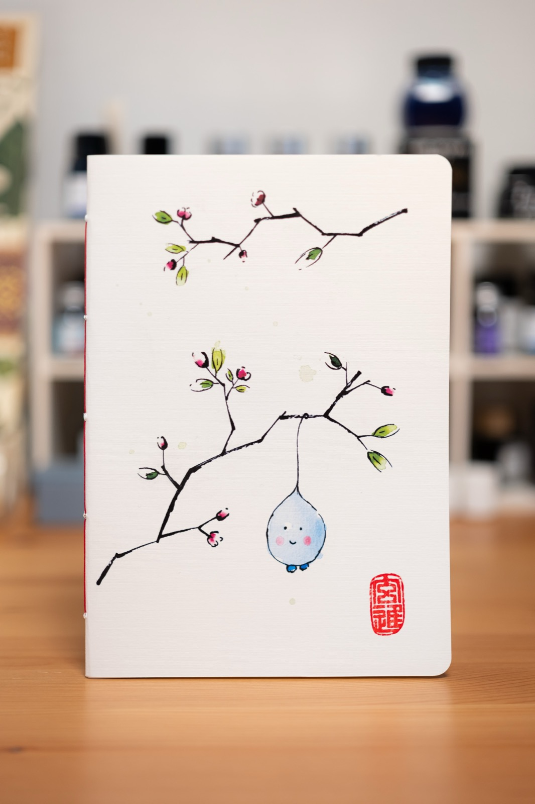
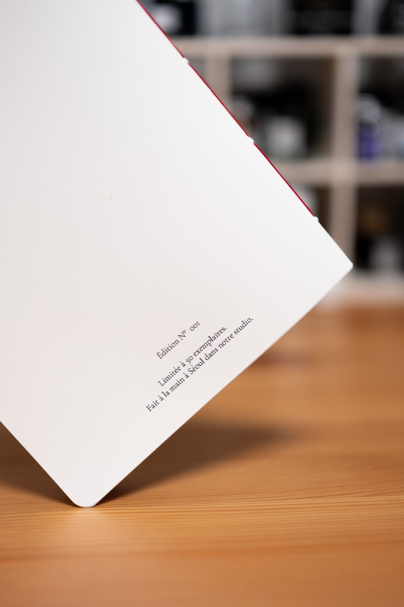
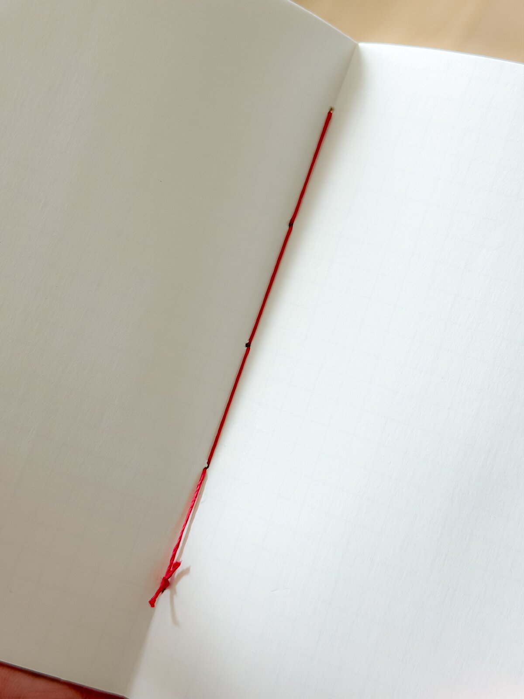
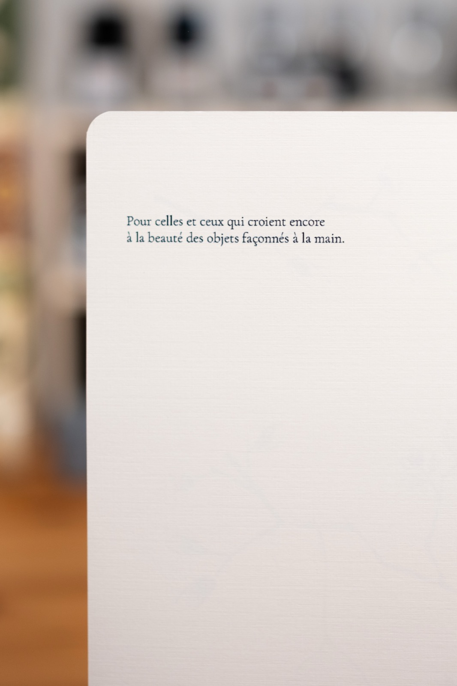

Hand-painted notebooks. Fountain pen paper.
Each edition begins as an original watercolour in Seoul. The cover is scanned in high fidelity and printed as a numbered edition of 50. Inside: Korean paper sourced by Jordan and tested with fountain pens, available blank, lined, or squared.
Made by a hand.
Studio Monjo is French by origin and based in Seoul. The work borrows from both worlds: the atelier, the edition, the house mark, and a daily closeness to paper.
The notebooks are made for the private act of writing. Artwork, paper, thread and seal all serve that moment.
The interior paper is selected for fountain pens: clean lines, little feathering, and no easy bleed-through in ordinary use.

A numbered run.
Every edition starts with one original watercolour, sold as a 1/1 artwork.
The painting is scanned in high quality and printed on fifty notebook covers. When the fiftieth notebook leaves the studio, the image is retired.
Paint the original
Ink and watercolour on paper. One artwork, made by hand.
Scan the painting
The artwork is scanned carefully so the printed covers keep the line and colour.
Print fifty covers
Each notebook belongs to the same limited image and carries its edition mark.
Seal before shipping
Before it leaves Seoul, each printed notebook is inspected and sealed in red by the artist.
Three interiors, for three ways of thinking.
The cover belongs to the edition. The inside belongs to the person who writes in it.
A6 travels with you. A5 gives the desk more room for longer thought.
Blank for open pages, lined for long writing, squared for plans, diagrams, lists, and margins.
Jordan sources the interior sheet in South Korea and tests it with real pens and inks.
Interior paper is FSC, chlorine free and acid free. Cover paper is FSC, ECF and acid free.

Paper is part of the product.
Both the cover paper and the interior paper are sourced by Jordan in South Korea for Studio Monjo.
The page must feel good under the hand, hold fountain-pen ink cleanly, suit the artwork, and make sense as a material choice.
The final mark.
The red seal is permanent to Studio Monjo. It is the last act before a notebook leaves the studio.
A printed cover becomes a Studio Monjo notebook after it has been checked, handled and sealed in red.
French words, quiet edition marks.
The inside cover carries the line: Pour celles et ceux qui croient encore à la beauté des objets façonnés à la main. For those who still believe in the beauty of objects shaped by hand.
The back cover carries the edition language exactly as it appears on the object: Édition N° 001. Limitée à 50 exemplaires. Fait à la main à Séoul dans notre studio.

Available now.
Current notebook editions are sold through the Studio Monjo Naver Smart Store.
View on Naver